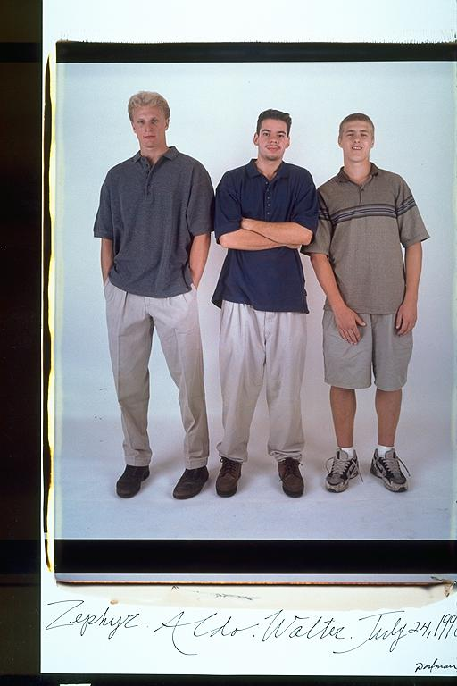

Pals: Boys Who Grew Up Together
elsadorfman.com/pals
Eugene: Earlham College:
Pronounced Url Ham College in Indiana, Aldo began his bold journey to the
outer reaches of his imagination and life. Traveling to the heartland was
good and bad for Aldo. He met new people, experimented in life, and developed
into his own man. We rarely saw the White Lotus during his college career.
I went to Earlham once, when he was going pre-freshman summer and once,
after he graduated. Both times it was pretty........boring. But Aldo and
his friends came up with creative ways to occupy their time. The likes of
which I cannot disclose...
He was closest with his man Walt, and Marlon but he got kicked out. Aldo
used to come back with stories for days. And who could forget World
Fellowship Summers.
Aldo: Zephyr I've known my whole life, but Walt I met at college. And since Zeph later ended up coming to my school, all my friends became his friends. We had some great times together, from playing intramural basketball to "hanging out" (interpret as you like). Since my school was really small, all of my friends are people that I got to know really well. There was no room for superficial relationships.

elsad@comcast.net